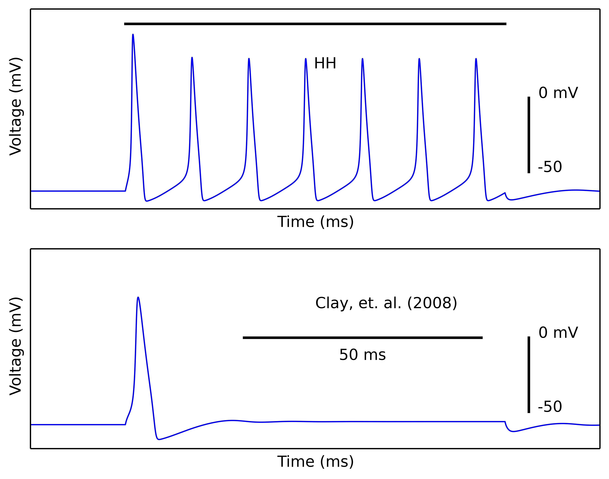

This is the readme for the NEURON and python model associated with the paper Clay JR, Paydarfar D, Forger DB (2008) A simple modification of the Hodgkin and Huxley equations explains type 3 excitability in squid giant axons. J R Soc Interface 5:1421-8 This model was contributed by Mohit Ganguly and was implemented by him and John R Clay. This model requires NEURON with python to be installed which is available for free from http://www.neuron.yale.edu To run either autolaunch from ModelDB or download and extract this archive, compile the mod files and start with a command like python -i clay_mohit.py For more help on downloading and running the model see https://senselab.med.yale.edu/ModelDB/NEURON_DwnldGuide.html. You should see an image similar to figure 6 in the paper: 